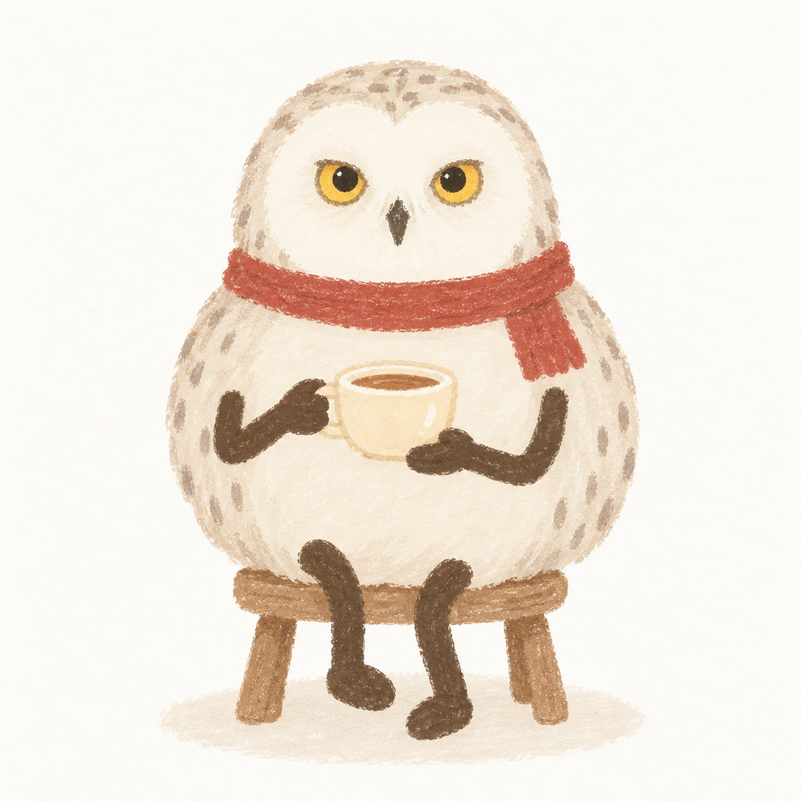

这次想做哪一件事？

返回房间
收藏与装扮
初始凳子 不增加专注时长或永久收藏；关闭后恢复正常装扮。0 枚成长印记
累计有效专注带来永久收藏；暂停、休息、离线不计入。初始门槛可调整；旧眼镜 5 分钟、阅读椅 10 分钟解锁。设置
记录
仅在这台 Mac 保存前台 APP 和时长。活动类别由你确认；没有操作也可能在学习。停止后不再查询或累计，重开需要再次开启。
默认关闭，尚未采集。
这次想做哪一件事？

0 枚成长印记
累计有效专注带来永久收藏；暂停、休息、离线不计入。初始门槛可调整；旧眼镜 5 分钟、阅读椅 10 分钟解锁。仅在这台 Mac 保存前台 APP 和时长。活动类别由你确认；没有操作也可能在学习。停止后不再查询或累计，重开需要再次开启。
默认关闭，尚未采集。